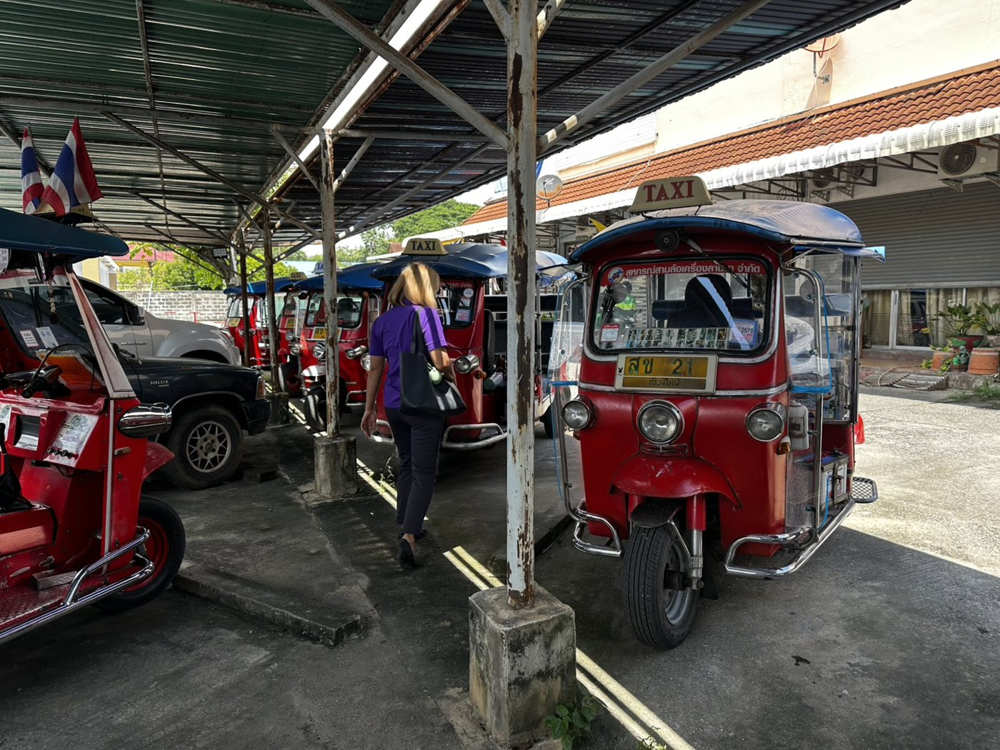
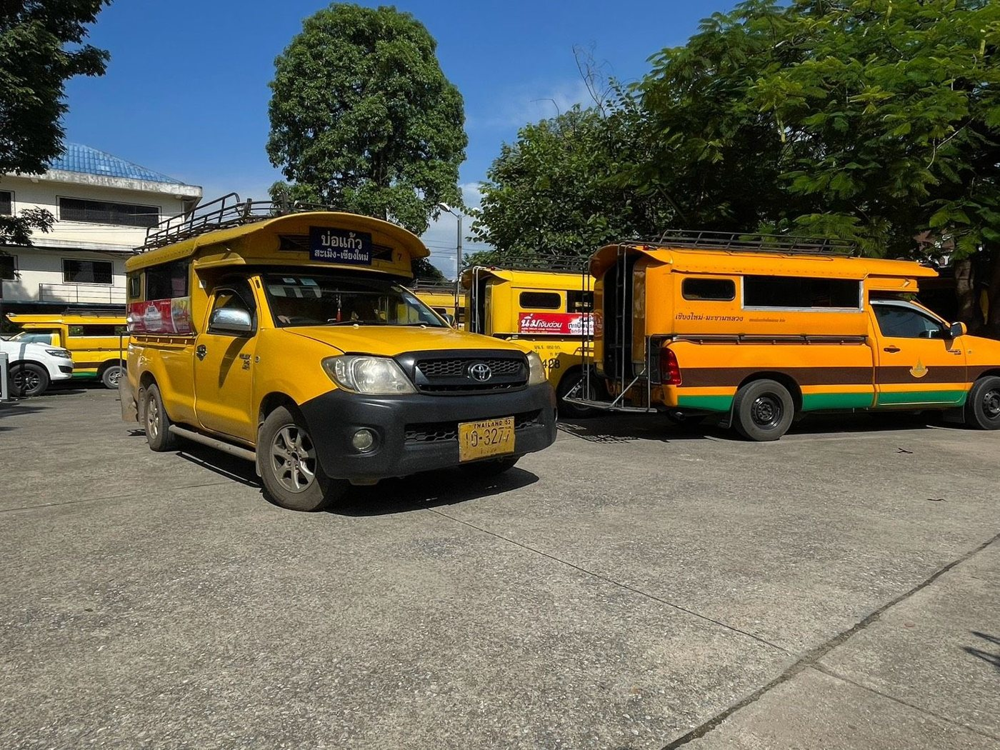

เที่ยวเชียงใหม่แบบคนท้องถิ่น
สามล้อ รถแดง และสองแถวจากสหกรณ์ที่มีใบอนุญาต รับถึงที่พัก ราคาต่อคัน มาหลายคนยิ่งคุ้ม
- ยกเลิกฟรี 24 ชม.
- รับถึงที่พัก
- คนขับสหกรณ์มีใบอนุญาต
- ราคาล็อกเมื่อยืนยัน
แพ็กเกจแนะนำ

มนต์เสน่ห์คูเมือง 5 วัด
ครึ่งวันวนคูเมืองด้วยสามล้อหรือรถแดง แวะ 5 วัดสำคัญ จากเจดีย์หลวงถึงอุโบสถเงิน คนขับรอทุกจุด

ม่อนแจ่ม-น้ำตกแม่สา ดอยเย็นแม่ริม
เดินชมน้ำตกแม่สา ขึ้นสันดอยม่อนแจ่มรับลมเย็น แล้วเดินแปลงสตรอว์เบอร์รีโครงการหลวงหนองหอย

น้ำตกบัวตอง น้ำตกหินปูนที่เดินขึ้นได้
เดินไต่ขึ้นน้ำตกบัวตองที่หินปูนเกาะเท้าจนเดินสวนสายน้ำได้ ชมน้ำพุเจ็ดสี แล้วแวะศูนย์ศึกษาฯ ห้วยฮ่องไคร้

วัดบ้านเด่น + แดนเทวดา สายถ่ายรูปแม่แตง
เดินสวนน้ำตกแฟนตาซีแดนเทวดา แล้วชมวิหารล้านนาอลังการของวัดบ้านเด่นในแสงบ่าย มุมสวยทุกก้าว

ถ้ำเชียงดาว + วัดถ้ำผาปล่อง
ส่องตะเกียงลอดถ้ำเชียงดาวกับไกด์ชาวบ้าน ไต่บันได 510 ขั้นสู่วัดถ้ำผาปล่อง และชมดอยหลวงเชียงดาวเต็มตา

แม่วาง ล่องแพไม้ไผ่ + ผาช่อ
ล่องแพไม้ไผ่ลำน้ำแม่วางกับคนถ่อแพท้องถิ่น แล้วเดินชมหน้าผาดินผาช่อ แกรนด์แคนยอนแห่งอุทยานฯ แม่วาง
ดอยอินทนนท์ หลังคาเมืองไทย
ขึ้นจุดสูงสุดของประเทศไทย ชมพระมหาธาตุเจดีย์คู่ น้ำตกวชิรธาร และเดินเส้นทางกิ่วแม่ปานบนสันเขา

วัดไม้ล้านนา เกาะคา–ห้างฉัตร
ตามรอยวัดล้านนาเก่าแก่ของลำปาง วัดพระธาตุลำปางหลวงกับเงาพระธาตุกลับหัว วัดปงยางคก และวัดไหล่หิน
เที่ยวตามสไตล์
ทริปทั้งหมด 89
ในเมือง4 ชม.เริ่มต้น ฿1,250มนต์เสน่ห์คูเมือง 5 วัด
ครึ่งวันวนคูเมืองด้วยสามล้อหรือรถแดง แวะ 5 วัดสำคัญ จากเจดีย์หลวงถึงอุโบสถเงิน คนขับรอทุกจุด
- สามล้อ฿417/ คน มา 3 คน
- รถแดง฿130/ คน มา 12 คน
นอกเมือง8 ชม.เริ่มต้น ฿3,000ม่อนแจ่ม-น้ำตกแม่สา ดอยเย็นแม่ริม
เดินชมน้ำตกแม่สา ขึ้นสันดอยม่อนแจ่มรับลมเย็น แล้วเดินแปลงสตรอว์เบอร์รีโครงการหลวงหนองหอย
- สองแถวสายอำเภอ฿250/ คน มา 12 คน
นอกเมือง7 ชม.เริ่มต้น ฿2,650น้ำตกบัวตอง น้ำตกหินปูนที่เดินขึ้นได้
เดินไต่ขึ้นน้ำตกบัวตองที่หินปูนเกาะเท้าจนเดินสวนสายน้ำได้ ชมน้ำพุเจ็ดสี แล้วแวะศูนย์ศึกษาฯ ห้วยฮ่องไคร้
- สองแถวสายอำเภอ฿221/ คน มา 12 คน
นอกเมือง8 ชม.เริ่มต้น ฿3,000วัดบ้านเด่น + แดนเทวดา สายถ่ายรูปแม่แตง
เดินสวนน้ำตกแฟนตาซีแดนเทวดา แล้วชมวิหารล้านนาอลังการของวัดบ้านเด่นในแสงบ่าย มุมสวยทุกก้าว
- สองแถวสายอำเภอ฿250/ คน มา 12 คน
นอกเมือง9 ชม.เริ่มต้น ฿3,400ถ้ำเชียงดาว + วัดถ้ำผาปล่อง
ส่องตะเกียงลอดถ้ำเชียงดาวกับไกด์ชาวบ้าน ไต่บันได 510 ขั้นสู่วัดถ้ำผาปล่อง และชมดอยหลวงเชียงดาวเต็มตา
- สองแถวสายอำเภอ฿284/ คน มา 12 คน
นอกเมือง8 ชม.เริ่มต้น ฿3,000แม่วาง ล่องแพไม้ไผ่ + ผาช่อ
ล่องแพไม้ไผ่ลำน้ำแม่วางกับคนถ่อแพท้องถิ่น แล้วเดินชมหน้าผาดินผาช่อ แกรนด์แคนยอนแห่งอุทยานฯ แม่วาง
- สองแถวสายอำเภอ฿250/ คน มา 12 คน
นอกเมือง11 ชม.เริ่มต้น ฿4,300ดอยอินทนนท์ หลังคาเมืองไทย
ขึ้นจุดสูงสุดของประเทศไทย ชมพระมหาธาตุเจดีย์คู่ น้ำตกวชิรธาร และเดินเส้นทางกิ่วแม่ปานบนสันเขา
- สองแถวสายอำเภอ฿359/ คน มา 12 คน
นอกเมือง10 ชม.เริ่มต้น ฿4,050วัดไม้ล้านนา เกาะคา–ห้างฉัตร
ตามรอยวัดล้านนาเก่าแก่ของลำปาง วัดพระธาตุลำปางหลวงกับเงาพระธาตุกลับหัว วัดปงยางคก และวัดไหล่หิน
- สองแถวสายอำเภอ฿338/ คน มา 12 คน
 ในเมือง2 ชม.เริ่มต้น ฿650
ในเมือง2 ชม.เริ่มต้น ฿650คูเมืองด่วน 3 จุด จากร้านเช่าชุด
2 ชั่วโมงพอดี ใส่ชุดไทยจากร้าน ถ่ายรูป 3 จุดดังในเมืองเก่า แล้วกลับร้านทันเวลาคืนชุด
- สามล้อ฿217/ คน มา 3 คน
- รถแดง฿67/ คน มา 12 คน
 ในเมือง4 ชม.เริ่มต้น ฿1,250
ในเมือง4 ชม.เริ่มต้น ฿1,250ชุดไทยถ่ายวัด รอบแสงเช้า
แต่งชุดไทยหรือชุดล้านนาที่ร้าน แล้วนั่งรถไปถ่ายรูปประตูท่าแพและวัดสวย 3 แห่งในแสงเช้า คนขับรอทุกจุด
- สามล้อ฿417/ คน มา 3 คน
- รถแดง฿130/ คน มา 12 คน
 ในเมือง4 ชม.เริ่มต้น ฿1,250
ในเมือง4 ชม.เริ่มต้น ฿1,250เวียงกุมกาม นั่งรถม้าชมเมืองโบราณ
เมืองโบราณยุคพญามังรายที่เคยจมใต้ตะกอนน้ำปิงนานหลายร้อยปี นั่งรถม้าลัดเลาะโบราณสถาน แล้วพักคาเฟ่ริมปิง
- สามล้อ฿417/ คน มา 3 คน
- รถแดง฿130/ คน มา 12 คน
 ในเมือง4 ชม.เริ่มต้น ฿1,250
ในเมือง4 ชม.เริ่มต้น ฿1,250วัดอุโมงค์ · วัดสวนดอก · บ้านข้างวัด
ชมกู่ขาววัดสวนดอก เดินอุโมงค์อิฐโบราณกลางป่าวัดอุโมงค์ แล้วเดินเล่นชุมชนศิลปินบ้านข้างวัด
- สามล้อ฿417/ คน มา 3 คน
- รถแดง฿130/ คน มา 12 คน
 ในเมือง3 ชม.เริ่มต้น ฿1,000
ในเมือง3 ชม.เริ่มต้น ฿1,000ชุดล้านนา ถ่ายรูปแสงเย็น
ใส่ชุดล้านนาออกถ่ายรูปช่วงแดดอ่อน ที่เจดีย์ช้างล้อมวัดเชียงมั่น แจ่งศรีภูมิ และเจดีย์อิฐวัดโลกโมฬียามโพล้เพล้
- สามล้อ฿334/ คน มา 3 คน
- รถแดง฿105/ คน มา 12 คน
 ในเมือง3 ชม.เริ่มต้น ฿1,000
ในเมือง3 ชม.เริ่มต้น ฿1,000วัดในเวียงยามค่ำ แสงไฟเรืองรอง
ชมเจดีย์หลวงอาบแสงไฟ ลานวัดพระสิงห์ยามค่ำ อนุสาวรีย์สามกษัตริย์ และประตูท่าแพยามกลางคืน ในอากาศเย็นสบาย
- สามล้อ฿334/ คน มา 3 คน
- รถแดง฿105/ คน มา 12 คน
 ในเมือง3 ชม.เริ่มต้น ฿1,000
ในเมือง3 ชม.เริ่มต้น ฿1,000วัดศรีสุพรรณยามเย็น คุยกับพระ
ไปวัดเงินช่วงเย็นวันอังคาร พฤหัสฯ หรือเสาร์ ร่วมสนทนากับพระเป็นภาษาอังกฤษ แล้วชมอุโบสถเงินยามค่ำ
- สามล้อ฿334/ คน มา 3 คน
- รถแดง฿105/ คน มา 12 คน
 ในเมือง2.5 ชม.เริ่มต้น ฿800
ในเมือง2.5 ชม.เริ่มต้น ฿800Monk Chat วัดสวนดอก คุยกับพระ
นั่งคุยกับพระนักศึกษา มจร. เรื่องชีวิตสงฆ์และพุทธศาสนาเป็นภาษาอังกฤษ ท่ามกลางเจดีย์ขาววัดสวนดอกยามเย็น
- สามล้อ฿267/ คน มา 3 คน
- รถแดง฿88/ คน มา 12 คน
ในเมือง5 ชม.เริ่มต้น ฿1,550ครึ่งวันฝึกสมาธิกับพระ วัดสวนดอก
คอร์สสมาธิครึ่งวันสำหรับมือใหม่ทุกวันจันทร์ ฟังพระอธิบายพื้นฐาน ฝึกนั่ง เดิน ยืน แล้วถามตอบ รถรับส่งถึงที่
- สามล้อ฿517/ คน มา 3 คน
- รถแดง฿159/ คน มา 12 คน
 ในเมือง3.5 ชม.เริ่มต้น ฿1,150
ในเมือง3.5 ชม.เริ่มต้น ฿1,1503 พิพิธภัณฑ์กลางเวียง ย้อนรอยล้านนา
ย้อนเรื่องราวเชียงใหม่กว่า 700 ปี ใน 3 พิพิธภัณฑ์รอบลานอนุสาวรีย์สามกษัตริย์ ใจกลางเมืองเก่า
- สามล้อ฿384/ คน มา 3 คน
- รถแดง฿117/ คน มา 12 คน
 ในเมือง3 ชม.เริ่มต้น ฿1,000
ในเมือง3 ชม.เริ่มต้น ฿1,000พิพิธภัณฑ์แห่งชาติ & วัดเจ็ดยอด
เรียนรู้ล้านนาตั้งแต่ยุคก่อนประวัติศาสตร์ในพิพิธภัณฑสถานแห่งชาติเชียงใหม่ แล้วชมวิหารเจ็ดยอดอายุกว่า 500 ปี
- สามล้อ฿334/ คน มา 3 คน
- รถแดง฿105/ คน มา 12 คน
ในเมือง3.5 ชม.เริ่มต้น ฿1,150ตามรอยสถาปัตยกรรมล้านนาในเวียง
ชมงานไม้สัก ปูนปั้น และหน้าบันแกะสลักแบบล้านนาแท้ จากวิหารไม้วัดพันเตาถึงวิหารลายคำวัดพระสิงห์
- สามล้อ฿384/ คน มา 3 คน
- รถแดง฿117/ คน มา 12 คน
 ในเมือง3.5 ชม.เริ่มต้น ฿1,150
ในเมือง3.5 ชม.เริ่มต้น ฿1,150เรือนโบราณล้านนา & อ่างแก้ว มช.
เดินชมเรือนล้านนาโบราณที่ย้ายมาอนุรักษ์ใน มช. แล้วเดินเล่นรอบอ่างแก้วรับแดดเย็น มีทิวเขาเป็นฉากหลัง
- สามล้อ฿384/ คน มา 3 คน
- รถแดง฿117/ คน มา 12 คน
 ในเมือง5 ชม.เริ่มต้น ฿1,550
ในเมือง5 ชม.เริ่มต้น ฿1,550สวนสัตว์เชียงใหม่ ครึ่งวันกับครอบครัว
พาเด็ก ๆ เที่ยวสวนสัตว์ใหญ่ร่มรื่นเชิงเขา นั่งรถในสวนชมสัตว์นานาชนิด เพิ่มอะควาเรียมได้ตามใจ
- สามล้อ฿517/ คน มา 3 คน
- รถแดง฿159/ คน มา 12 คน
 ในเมือง4 ชม.เริ่มต้น ฿1,250
ในเมือง4 ชม.เริ่มต้น ฿1,250เชียงใหม่ไนท์ซาฟารี ผจญภัยยามค่ำ
เดินชมสัตว์รอบทะเลสาบช่วงโพล้เพล้ แล้วนั่งรถรางกลางคืนส่องสัตว์ป่าในความมืด ทริปค่ำที่สนุกทั้งครอบครัว
- สามล้อ฿417/ คน มา 3 คน
- รถแดง฿130/ คน มา 12 คน
 ในเมือง3.5 ชม.เริ่มต้น ฿1,150
ในเมือง3.5 ชม.เริ่มต้น ฿1,150อุทยานหลวงราชพฤกษ์ สวนดอกไม้ & หอคำ
เดินเล่นสวนพฤกษศาสตร์กว่า 500 ไร่ ชมหอคำหลวงสถาปัตยกรรมล้านนาอันโอ่อ่า และโดมไม้เขตร้อน ในแดดเช้า
- สามล้อ฿384/ คน มา 3 คน
- รถแดง฿117/ คน มา 12 คน
 ในเมือง3 ชม.เริ่มต้น ฿1,000
ในเมือง3 ชม.เริ่มต้น ฿1,000เดินลัดตรอกเมืองเก่า รถรอรับปลายทาง
รถส่งต้นทาง คุณเดินลัดเลาะตรอกเมืองเก่าราว 2 กม. ผ่าน 5 วัดเก่าแก่ แล้วรถรอรับปลายทาง ไม่ต้องเดินย้อน
- สามล้อ฿334/ คน มา 3 คน
- รถแดง฿105/ คน มา 12 คน
 ในเมือง2.5 ชม.เริ่มต้น ฿800
ในเมือง2.5 ชม.เริ่มต้น ฿800ใส่บาตรยามเช้า & วัดยามรุ่งอรุณ
ตื่นเช้าไปใส่บาตรตามวิถีคนเชียงใหม่ที่ย่านประตูเชียงใหม่ แล้วชมวัดพระสิงห์และเจดีย์หลวงก่อนนักท่องเที่ยวมา
- สามล้อ฿267/ คน มา 3 คน
- รถแดง฿88/ คน มา 12 คน
 ในเมือง3 ชม.เริ่มต้น ฿1,000
ในเมือง3 ชม.เริ่มต้น ฿1,000ย่านช่างเงินวัวลาย & Kalm Village
สำรวจงานคราฟต์เชียงใหม่ ชมผ้าทอที่ Kalm Village ดูงานตอกลายเงินที่วัดหมื่นสาร แล้วเดินชมร้านเงินถนนวัวลาย
- สามล้อ฿334/ คน มา 3 คน
- รถแดง฿105/ คน มา 12 คน
 ในเมือง3 ชม.เริ่มต้น ฿1,000
ในเมือง3 ชม.เริ่มต้น ฿1,000วัดไทใหญ่-พม่า นอกเส้นทางท่องเที่ยว
ตามรอยช่างไทใหญ่และพ่อค้าไม้สักพม่า ชมวัดป่าเป้า เจดีย์ทรงผลแตงโมวัดกู่เต้า และวัดศิลปะพม่าย่านท่าแพ
- สามล้อ฿334/ คน มา 3 คน
- รถแดง฿105/ คน มา 12 คน
 ในเมือง3.5 ชม.เริ่มต้น ฿1,150
ในเมือง3.5 ชม.เริ่มต้น ฿1,150ริมปิงย่านวัดเกต ยุคค้าไม้สัก
ย้อนยุคเชียงใหม่สมัยค้าไม้สักและรถไฟ ชมพิพิธภัณฑ์วัดเกต ถนนเจริญราษฎร์ สถานีรถไฟ และสุสานชาวต่างชาติ
- สามล้อ฿384/ คน มา 3 คน
- รถแดง฿117/ คน มา 12 คน
 ในเมือง2 ชม.เริ่มต้น ฿650
ในเมือง2 ชม.เริ่มต้น ฿650วนรอบคูเมือง 5 ประตู 4 แจ่ง
นั่งรถวนรอบกำแพงเมืองอายุกว่า 700 ปี แวะถ่ายรูปประตูเมืองทั้ง 5 และป้อมมุมเมืองทั้ง 4 จบที่ประตูท่าแพยามเย็น
- สามล้อ฿217/ คน มา 3 คน
- รถแดง฿67/ คน มา 12 คน
 ในเมือง4 ชม.เริ่มต้น ฿1,250
ในเมือง4 ชม.เริ่มต้น ฿1,250กินแบบคนเชียงใหม่ ตลาดเช้า-ข้าวซอย
เดินตลาดธานินทร์และกาดหลวงแบบที่คนเมืองจ่ายกับข้าวจริง แล้วปิดท้ายด้วยข้าวซอยร้านเก่าแก่ย่านเจริญประเทศ
- สามล้อ฿417/ คน มา 3 คน
- รถแดง฿130/ คน มา 12 คน
 ในเมือง3 ชม.เริ่มต้น ฿1,000
ในเมือง3 ชม.เริ่มต้น ฿1,000ตะลุยกินยามค่ำ รอบคูเมือง
ข้าวขาหมูป้าหมวกคาวบอยที่ประตูช้างเผือก ตลาดประตูเชียงใหม่ยามค่ำ และตลาดดอกไม้ต้นลำไยตอนกลางคืน
- สามล้อ฿334/ คน มา 3 คน
- รถแดง฿105/ คน มา 12 คน
 ในเมือง3.5 ชม.เริ่มต้น ฿1,150
ในเมือง3.5 ชม.เริ่มต้น ฿1,150แสงสุดท้ายบนฟ้า & แจ๊สสดประตูช้างเผือก
ชมพระอาทิตย์ตกจากบาร์ลอยฟ้าชั้น 22 ถ่ายรูปประตูท่าแพยามค่ำ แล้วต่อด้วยดนตรีแจ๊สสดที่ North Gate
- สามล้อ฿384/ คน มา 3 คน
- รถแดง฿117/ คน มา 12 คน
 ในเมือง3 ชม.เริ่มต้น ฿1,000
ในเมือง3 ชม.เริ่มต้น ฿1,000ถนนคนเดินเสาร์-อาทิตย์
เย็นวันเสาร์ถนนวัวลาย เย็นวันอาทิตย์ถนนราชดำเนิน รับ-ส่งถึงปากทาง เดินช้อป-ชิมได้เต็มที่
- สามล้อ฿334/ คน มา 3 คน
- รถแดง฿105/ คน มา 12 คน
 ในเมือง3 ชม.เริ่มต้น ฿1,000
ในเมือง3 ชม.เริ่มต้น ฿1,000นิมมานฯ คาเฟ่ฮอปปิง
บ่ายสบาย ๆ ย่านนิมมานเหมินท์ One Nimman คาเฟ่ในซอยลับ Think Park และ MAYA ในทริปเดียว
- สามล้อ฿334/ คน มา 3 คน
- รถแดง฿105/ คน มา 12 คน
 ในเมือง4 ชม.เริ่มต้น ฿1,250
ในเมือง4 ชม.เริ่มต้น ฿1,250บ่อสร้าง-สันกำแพง ถนนสายหัตถกรรม
ดูช่างวาดลายร่มกระดาษสาที่บ่อสร้าง แวะโรงงานผ้าไหมและเครื่องเขินบนถนนสายหัตถกรรมสันกำแพง
- สามล้อ฿417/ คน มา 3 คน
- รถแดง฿130/ คน มา 12 คน
 ในเมือง2.5 ชม.เริ่มต้น ฿800
ในเมือง2.5 ชม.เริ่มต้น ฿800ตลาดดอกไม้ยามรุ่ง ต้นลำไย-เมืองใหม่
ตื่นเช้าไปดูดอกไม้ส่งเข้าเมืองที่ตลาดต้นลำไย ตลาดค้าส่งผักผลไม้เมืองใหม่ และกาดหลวงตอนเพิ่งเปิดแผง
- สามล้อ฿267/ คน มา 3 คน
- รถแดง฿88/ คน มา 12 คน
 ในเมือง3 ชม.เริ่มต้น ฿1,000
ในเมือง3 ชม.เริ่มต้น ฿1,000มื้อเช้าเมืองเหนือ ตลาดเช้า-โจ๊กสมเพชร
เริ่มวันแบบคนเชียงใหม่ ขนมพื้นเมืองที่ตลาดประตูเชียงใหม่ โจ๊กร้านดัง 24 ชม. และกาแฟจากดอยชาวอาข่า
- สามล้อ฿334/ คน มา 3 คน
- รถแดง฿105/ คน มา 12 คน
 ในเมือง3 ชม.เริ่มต้น ฿1,000
ในเมือง3 ชม.เริ่มต้น ฿1,000ล่าข้าวซอย 3 ร้านดังในวันเดียว
ชิมข้าวซอยสามร้านขึ้นชื่อ แม่สาย คุณยาย และลำดวนฟ้าฮ่าม เทียบรสน้ำแกงกะทิให้รู้ว่าชอบแบบไหน
- สามล้อ฿334/ คน มา 3 คน
- รถแดง฿105/ คน มา 12 คน
 ในเมือง3 ชม.เริ่มต้น ฿1,000
ในเมือง3 ชม.เริ่มต้น ฿1,000ไนท์บาซาร์ ช้อปกลางคืนครบสามตลาด
ช้อปของฝากที่ไนท์บาซาร์ ถ.ช้างคลาน แวะศูนย์อาหารกาแล แล้วปิดท้ายซีฟู้ดและของกินที่ตลาดอนุสาร
- สามล้อ฿334/ คน มา 3 คน
- รถแดง฿105/ คน มา 12 คน
 ในเมือง5 ชม.เริ่มต้น ฿1,550
ในเมือง5 ชม.เริ่มต้น ฿1,550ล่องเรือแม่ปิง & ดินเนอร์ริมน้ำ
ล่องเรือแม่น้ำปิงช่วงบ่ายแก่ แวะบ้านเกษตรกรริมน้ำ แล้วต่อมื้อค่ำร้านริมน้ำย่านเจริญราษฎร์ คนขับรอรับกลับ
- สามล้อ฿517/ คน มา 3 คน
- รถแดง฿159/ คน มา 12 คน
 ในเมือง3.5 ชม.เริ่มต้น ฿1,150
ในเมือง3.5 ชม.เริ่มต้น ฿1,150ขันโตกดินเนอร์ & ฟ้อนล้านนา
รับ-ส่งไปดินเนอร์ขันโตก นั่งล้อมโตกกินอาหารเหนือ ชมฟ้อนเล็บ ฟ้อนดาบ และกลองล้านนา แล้วกลับที่พักสบาย ๆ
- สามล้อ฿384/ คน มา 3 คน
- รถแดง฿117/ คน มา 12 คน
 ในเมือง3.5 ชม.เริ่มต้น ฿1,150
ในเมือง3.5 ชม.เริ่มต้น ฿1,150คืนมวยไทย เวทีท่าแพ-ลอยเคราะห์
รับ-ส่งไปชมมวยไทยสดกลางเมืองเชียงใหม่ ไหว้ครูรำมวย ชกจริง 6–10 คู่ คนขับรอจนจบรายการ
- สามล้อ฿384/ คน มา 3 คน
- รถแดง฿117/ คน มา 12 คน
 ในเมือง3 ชม.เริ่มต้น ฿1,000
ในเมือง3 ชม.เริ่มต้น ฿1,000ย่านวัดเกต ถนนเจริญราษฎร์ริมปิง
เดินย่านเก่าริมน้ำปิงฝั่งตะวันออก วัดเกตการาม พิพิธภัณฑ์ของเก่าชุมชน และคาเฟ่ดอกไม้ริมน้ำ
- สามล้อ฿334/ คน มา 3 คน
- รถแดง฿105/ คน มา 12 คน
ในเมือง3 ชม.เริ่มต้น ฿1,000บ้านข้างวัด หมู่บ้านศิลปิน
เดินเล่นหมู่บ้านศิลปินในสวนร่มรื่น สตูดิโองานปั้น งานผ้า ร้านหนังสือ และคาเฟ่เล็ก ๆ ฝั่งตะวันตกของเมือง
- สามล้อ฿334/ คน มา 3 คน
- รถแดง฿105/ คน มา 12 คน
 ในเมือง3 ชม.เริ่มต้น ฿1,000
ในเมือง3 ชม.เริ่มต้น ฿1,000ตามรอยกาแฟพิเศษเชียงใหม่
ไล่ชิมกาแฟสามร้านระดับตำนาน ร้านแชมป์บาริสต้าย่านนิมมานฯ กาแฟชาวอาข่า และร้านซิงเกิลออริจินในคูเมือง
- สามล้อ฿334/ คน มา 3 คน
- รถแดง฿105/ คน มา 12 คน
ในเมือง2.5 ชม.เริ่มต้น ฿800ถนนวัวลาย ย่านช่างเงินเชียงใหม่
ย่านช่างเงินเก่าแก่ทางใต้คูเมือง อุโบสถเงินวัดศรีสุพรรณ หอศิลป์งานเงินวัดหมื่นสาร และร้านเครื่องเงินริมถนน
- สามล้อ฿267/ คน มา 3 คน
- รถแดง฿88/ คน มา 12 คน
ในเมือง2.5 ชม.เริ่มต้น ฿800ผ้าทอ-ผ้าชาวเขา กาดหลวงและตลาดม้ง
ล่าผ้าทอมือ ผ้าปักม้ง และผ้าฝ้ายพื้นเมือง ที่ชั้นบนกาดหลวง ตรอกตลาดม้ง และร้านผ้าย่านไชน่าทาวน์
- สามล้อ฿267/ คน มา 3 คน
- รถแดง฿88/ คน มา 12 คน
 ในเมือง3.5 ชม.เริ่มต้น ฿1,150
ในเมือง3.5 ชม.เริ่มต้น ฿1,150นวดไทยเพื่อสังคม ร้านนวดลีลา
นวดไทยสองชั่วโมงที่ร้านนวดลีลา ร้านที่ให้โอกาสผู้หญิงที่พ้นโทษได้ทำงาน แล้วจิบกาแฟดอยสบาย ๆ ก่อนกลับ
- สามล้อ฿384/ คน มา 3 คน
- รถแดง฿117/ คน มา 12 คน
 ในเมือง6 ชม.เริ่มต้น ฿1,800
ในเมือง6 ชม.เริ่มต้น ฿1,800เรียนทำอาหารไทย + เดินตลาดสด
แวะตลาดสมเพชรดูสมุนไพรและเครื่องแกง แล้วส่งถึงโรงเรียนสอนทำอาหารที่คุณจองไว้ เรียนจบรับกลับถึงที่พัก
- สามล้อ฿600/ คน มา 3 คน
- รถแดง฿188/ คน มา 12 คน
 ในเมือง3 ชม.เริ่มต้น ฿1,000
ในเมือง3 ชม.เริ่มต้น ฿1,000ปั้นดิน-เพนต์ถ้วย ที่ Mitt Studio
ลงมือปั้นหรือระบายสีเซรามิกที่สตูดิโอเล็กในคูเมือง เหมาะกับมือใหม่ แล้วไปต่อข้าวซอยร้านดังก่อนกลับ
- สามล้อ฿334/ คน มา 3 คน
- รถแดง฿105/ คน มา 12 คน
 นอกเมือง9 ชม.เริ่มต้น ฿3,400
นอกเมือง9 ชม.เริ่มต้น ฿3,400สะเมิงลูป วนรอบหุบเขาครบวง
วนรอบเส้นทางภูเขาสะเมิงครบวง แวะจุดชมวิว ตลาดสะเมิง สถานีเกษตรหลวงปางดะ และจุดชมวิวป่าสะเมิง
- สองแถวสายอำเภอ฿284/ คน มา 12 คน
 นอกเมือง7 ชม.เริ่มต้น ฿2,650
นอกเมือง7 ชม.เริ่มต้น ฿2,650สวนพฤกษศาสตร์ฯ + ห้วยตึงเฒ่า แม่ริม
เดินทางลอยฟ้าเหนือยอดไม้ในสวนพฤกษศาสตร์สมเด็จพระนางเจ้าสิริกิติ์ แล้วนั่งกระท่อมไม้ไผ่กินข้าวริมห้วยตึงเฒ่า
- สองแถวสายอำเภอ฿221/ คน มา 12 คน
 นอกเมือง9 ชม.เริ่มต้น ฿3,400
นอกเมือง9 ชม.เริ่มต้น ฿3,400ช้างแบบไม่ขี่ หุบเขาแม่แตง
ใช้เวลาเต็มวันกับช้างที่เดินหากินอย่างอิสระในหุบเขาแม่แตง ศูนย์ดูแลช้างแบบไม่ขี่ ไม่มีการแสดง
- สองแถวสายอำเภอ฿284/ คน มา 12 คน
 นอกเมือง8 ชม.เริ่มต้น ฿3,000
นอกเมือง8 ชม.เริ่มต้น ฿3,000เขื่อนแม่งัด นั่งเรือไปกินข้าวบนแพ
นั่งเรือหางยาวข้ามทะเลสาบเขื่อนแม่งัดไปแพกลางน้ำ ว่ายน้ำ พายคายัค และกินปลาสดท่ามกลางขุนเขา
- สองแถวสายอำเภอ฿250/ คน มา 12 คน
 นอกเมือง8 ชม.เริ่มต้น ฿3,000
นอกเมือง8 ชม.เริ่มต้น ฿3,000ล่องแก่งแม่แตง เรือยางผ่านแก่งชุด
ล่องเรือยางผ่านแก่งระดับ 3–4 ของลำน้ำแม่แตงกับทีมล่องแก่งมืออาชีพ แล้วกินข้าวกลางวันที่แคมป์ริมน้ำ
- สองแถวสายอำเภอ฿250/ คน มา 12 คน
 นอกเมือง10 ชม.เริ่มต้น ฿4,000
นอกเมือง10 ชม.เริ่มต้น ฿4,000ทะเลหมอกดอยกิ่วลม + น้ำพุร้อนโป่งเดือด
ออกก่อนรุ่งไปรอทะเลหมอกที่ดอยกิ่วลม อุทยานฯ ห้วยน้ำดัง แล้วลงมาดูน้ำพุร้อนโป่งเดือดพุ่งกลางป่า
- สองแถวสายอำเภอ฿334/ คน มา 12 คน
 นอกเมือง9 ชม.เริ่มต้น ฿3,650
นอกเมือง9 ชม.เริ่มต้น ฿3,650น้ำพุร้อนโป่งอ่าง + น้ำตกศรีสังวาลย์
แช่น้ำพุร้อนธรรมชาติโป่งอ่างกลางป่าอุทยานฯ ผาแดง แล้วไต่น้ำตกหินปูนศรีสังวาลย์ที่เดินขึ้นได้
- สองแถวสายอำเภอ฿305/ คน มา 12 คน
 นอกเมือง12 ชม.เริ่มต้น ฿6,000
นอกเมือง12 ชม.เริ่มต้น ฿6,000ดอยอ่างขาง สถานีเกษตรหลวงแห่งแรก
ขึ้นดอยอ่างขางชมสวนเมืองหนาวของสถานีเกษตรหลวงแห่งแรก หมู่บ้านคุ้ม และจุดชมวิวชายแดนบ้านนอแล
- สองแถวสายอำเภอ฿500/ คน มา 12 คน
 นอกเมือง8 ชม.เริ่มต้น ฿3,000
นอกเมือง8 ชม.เริ่มต้น ฿3,000น้ำตกแม่สะป๊อก + แพอ่างห้วยมะนาว
เดินลอดม่านน้ำตกแม่สะป๊อกต้นน้ำแม่วาง แล้วนั่งแพกินข้าวกลางอ่างห้วยมะนาว อ่างเก็บน้ำโครงการพระราชดำริ
- สองแถวสายอำเภอ฿250/ คน มา 12 คน
 นอกเมือง6 ชม.เริ่มต้น ฿2,300
นอกเมือง6 ชม.เริ่มต้น ฿2,300บ้านถวาย + พระธาตุดอยคำ
ไหว้พระธาตุดอยคำบนเนินเขา ชมวิวเมือง แล้วเดินเลือกงานไม้แกะสลักในบ้านถวาย หมู่บ้านหัตถกรรมเก่าแก่
- สองแถวสายอำเภอ฿192/ คน มา 12 คน
 นอกเมือง7 ชม.เริ่มต้น ฿2,650
นอกเมือง7 ชม.เริ่มต้น ฿2,650ออบขาน + แกรนด์แคนยอนหางดง
เดินชมโตรกหินที่สายน้ำแม่ขานกัดเซาะในอุทยานแห่งชาติออบขาน แล้วไปเล่นสวนน้ำแกรนด์แคนยอนหางดง
- สองแถวสายอำเภอ฿221/ คน มา 12 คน
 นอกเมือง6 ชม.เริ่มต้น ฿2,300
นอกเมือง6 ชม.เริ่มต้น ฿2,300กาดวัวควายสันป่าตอง เช้าวันเสาร์
ตื่นเช้าไปดูชาวบ้านซื้อขายวัวควายที่กาดทุ่งฟ้าบด กินข้าวเช้าแบบเหนือ แล้วเดินเวียงท่ากานและวัดต้นเกว๋น
- สองแถวสายอำเภอ฿192/ คน มา 12 คน
 นอกเมือง11 ชม.เริ่มต้น ฿4,300
นอกเมือง11 ชม.เริ่มต้น ฿4,300พระอาทิตย์ขึ้นกิ่วแม่ปาน ดอยอินทนนท์
ออกตีสี่ไปรอแสงแรกเหนือทะเลหมอกที่กิ่วแม่ปาน แล้วเก็บยอดดอยและพระมหาธาตุเจดีย์คู่ก่อนคนจะแน่น
- สองแถวสายอำเภอ฿359/ คน มา 12 คน
 นอกเมือง10 ชม.เริ่มต้น ฿3,800
นอกเมือง10 ชม.เริ่มต้น ฿3,800ผาดอกเสี้ยว + กาแฟบ้านแม่กลางหลวง
เดินป่าเส้นทางผาดอกเสี้ยวกับไกด์ปกาเกอะญอ ผ่านน้ำตกและนาขั้นบันได ไปจิบกาแฟอาราบิก้าที่บ้านแม่กลางหลวง
- สองแถวสายอำเภอ฿317/ คน มา 12 คน
 นอกเมือง10 ชม.เริ่มต้น ฿4,050
นอกเมือง10 ชม.เริ่มต้น ฿4,050โครงการหลวงอินทนนท์ + ขุนวาง
เดินสวนไม้ดอกเมืองหนาวของโครงการหลวงอินทนนท์ ชมน้ำตกสิริภูมิ แล้วข้ามเขาไปศูนย์วิจัยเกษตรหลวงขุนวาง
- สองแถวสายอำเภอ฿338/ คน มา 12 คน
 นอกเมือง7 ชม.เริ่มต้น ฿2,650
นอกเมือง7 ชม.เริ่มต้น ฿2,650น้ำตกแม่ยะ + พระธาตุศรีจอมทอง
สักการะพระบรมธาตุที่วัดพระธาตุศรีจอมทอง แล้วเดินทางสั้นไปชมน้ำตกแม่ยะ ม่านน้ำหลายชั้นสูงราว 260 เมตร
- สองแถวสายอำเภอ฿221/ คน มา 12 คน
 นอกเมือง10 ชม.เริ่มต้น ฿4,300
นอกเมือง10 ชม.เริ่มต้น ฿4,300ออบหลวง โตรกผาแม่แจ่ม + สวนสนบ่อแก้ว
เดินสะพานแขวนข้ามโตรกหินออบหลวงที่แม่น้ำแม่แจ่มไหลผ่าน แล้วเดินเล่นในป่าสนสามใบบ่อแก้ว อำเภอฮอด
- สองแถวสายอำเภอ฿359/ คน มา 12 คน
 นอกเมือง12 ชม.เริ่มต้น ฿5,550
นอกเมือง12 ชม.เริ่มต้น ฿5,550แม่แจ่ม ผ้าตีนจกและวัดป่าแดด
ข้ามดอยอินทนนท์ลงหุบเขาแม่แจ่ม ชมจิตรกรรมวัดป่าแดด วัดยางหลวง และหมู่บ้านทอผ้าตีนจกบ้านทองฟาย
- สองแถวสายอำเภอ฿463/ คน มา 12 คน
 นอกเมือง8 ชม.เริ่มต้น ฿3,000
นอกเมือง8 ชม.เริ่มต้น ฿3,000แม่กำปอง หมู่บ้านกลางหุบเขา
หมู่บ้านกลางป่าเมี่ยง บ้านไม้เรียงริมลำธาร จิบกาแฟดอย เดินเล่นน้ำตกหลายชั้น อากาศเย็นเกือบทั้งปี
- สองแถวสายอำเภอ฿250/ คน มา 12 คน
 นอกเมือง10 ชม.เริ่มต้น ฿3,800
นอกเมือง10 ชม.เริ่มต้น ฿3,800ข้ามดอยสู่น้ำพุร้อนแจ้ซ้อน
ข้ามสันดอยจากแม่กำปองสู่ลำปาง ต้มไข่ในบ่อน้ำพุร้อนธรรมชาติ แช่น้ำแร่ และเดินป่าไปน้ำตกแจ้ซ้อน
- สองแถวสายอำเภอ฿317/ คน มา 12 คน
 นอกเมือง10 ชม.เริ่มต้น ฿3,800
นอกเมือง10 ชม.เริ่มต้น ฿3,800บ้านป่าเหมี้ยง หุบเขากาแฟฝั่งลำปาง
หมู่บ้านท่องเที่ยวชุมชนกลางหุบเขาฝั่งลำปาง บ้านไม้ริมลำธาร สวนกาแฟ และน้ำตกที่ชาวบ้านพาไปเอง
- สองแถวสายอำเภอ฿317/ คน มา 12 คน
 นอกเมือง12 ชม.เริ่มต้น ฿6,000
นอกเมือง12 ชม.เริ่มต้น ฿6,000วัดเฉลิมพระเกียรติฯ เจดีย์ลอยฟ้าแจ้ห่ม
นั่งรถกระบะไต่เขาชัน แล้วเดินเท้าสู่เจดีย์ขาวที่เกาะอยู่บนยอดหินแหลม ภาพที่ใครเห็นก็เรียกว่าวัดลอยฟ้า
- สองแถวสายอำเภอ฿500/ คน มา 12 คน
 นอกเมือง7 ชม.เริ่มต้น ฿2,650
นอกเมือง7 ชม.เริ่มต้น ฿2,650ดอยสะเก็ด ไหว้พระ แช่น้ำแร่
เช้าไหว้พระธาตุดอยสะเก็ดชมวิวรอบทิศ พักริมอ่างแม่กวง แล้วแช่น้ำแร่ส่วนตัว นวดผ่อนคลายแบบไม่เร่งรีบ
- สองแถวสายอำเภอ฿221/ คน มา 12 คน
 นอกเมือง10 ชม.เริ่มต้น ฿3,800
นอกเมือง10 ชม.เริ่มต้น ฿3,800วันแห่งสติ โยคะ–สมาธิ ดอยสะเก็ด
ทั้งวันกับเดินจงกรม นั่งสมาธิ โยคะ และอาหารมังสวิรัติฝีมือเจ้าบ้าน ในบ้านสวนท่ามกลางทุ่งนาเชิงดอย
- สองแถวสายอำเภอ฿317/ คน มา 12 คน
 นอกเมือง9 ชม.เริ่มต้น ฿3,400
นอกเมือง9 ชม.เริ่มต้น ฿3,400เทพเสด็จ ดินแดนกาแฟดอยสะเก็ด
ขึ้นดอยเทพเสด็จ แหล่งกาแฟจีไอของเชียงใหม่ ชมสวนกาแฟใต้ร่มไม้ คั่ว-ชิมจากสวน แล้วนั่งคาเฟ่กลางป่า
- สองแถวสายอำเภอ฿284/ คน มา 12 คน
 นอกเมือง7 ชม.เริ่มต้น ฿2,650
นอกเมือง7 ชม.เริ่มต้น ฿2,650ห้วยฮ่องไคร้ ห้องเรียนธรรมชาติ
พาเด็ก ๆ เรียนรู้ป่า ดิน น้ำ บ่อปลา และฟาร์มโคนม ที่ศูนย์ศึกษาการพัฒนาฯ ตามพระราชดำริ แล้วพักริมอ่างแม่กวง
- สองแถวสายอำเภอ฿221/ คน มา 12 คน
นอกเมือง7 ชม.เริ่มต้น ฿2,650ถ้ำเมืองออน + น้ำพุร้อนสันกำแพง
ไต่บันไดลงถ้ำหินงอกหินย้อยกลางภูเขาหินปูน แล้วต้มไข่ แช่เท้า แช่น้ำแร่ที่น้ำพุร้อนสันกำแพง
- สองแถวสายอำเภอ฿221/ คน มา 12 คน
 นอกเมือง8 ชม.เริ่มต้น ฿3,000
นอกเมือง8 ชม.เริ่มต้น ฿3,000คลาสทำอาหารไทยในฟาร์มออร์แกนิก
เด็ดสมุนไพรจากแปลง โขลกพริกแกงเอง ทำอาหารไทยในฟาร์มที่แม่ออน แล้วไปแช่น้ำพุร้อนผ่อนคลายต่อ
- สองแถวสายอำเภอ฿250/ คน มา 12 คน
 นอกเมือง6 ชม.เริ่มต้น ฿2,300
นอกเมือง6 ชม.เริ่มต้น ฿2,300ไหมเอี่ยม + กระดาษสาบ้านต้นเปา
ชมศิลปะร่วมสมัยในพิพิธภัณฑ์ไหมเอี่ยมผนังกระจกเงา แล้วไปดูงานกระดาษสาทำมือที่สืบทอดกันมากว่าร้อยปี
- สองแถวสายอำเภอ฿192/ คน มา 12 คน
 นอกเมือง7 ชม.เริ่มต้น ฿2,650
นอกเมือง7 ชม.เริ่มต้น ฿2,650มรดกหริภุญชัย ลำพูน
หนึ่งในเมืองเก่าแก่ที่สุดของภาคเหนือ ไหว้พระธาตุหริภุญชัย ชมพิพิธภัณฑ์ วัดจามเทวี และถนนต้นยางนายักษ์
- สองแถวสายอำเภอ฿221/ คน มา 12 คน
 นอกเมือง6 ชม.เริ่มต้น ฿2,300
นอกเมือง6 ชม.เริ่มต้น ฿2,300ลำพูนฝั่งตะวันออก วัดพระยืน–เวียงยอง
ข้ามน้ำกวงสู่ชุมชนเวียงยอง ไหว้วัดเก่าครั้งพระนางจามเทวี ชมกู่ช้าง–กู่ม้า และวัดมหาวัน ย่านเก่าที่คนไม่ค่อยรู้
- สองแถวสายอำเภอ฿192/ คน มา 12 คน
 นอกเมือง8 ชม.เริ่มต้น ฿3,000
นอกเมือง8 ชม.เริ่มต้น ฿3,000ผ้าฝ้ายป่าซาง + พระพุทธบาทตากผ้า
ดูชาวยองทอผ้าฝ้ายบนกี่โบราณ ช้อปผ้าทอมือที่ป่าซาง แล้วขึ้นบันไดนาคไหว้รอยพระพุทธบาทตากผ้า
- สองแถวสายอำเภอ฿250/ คน มา 12 คน
 นอกเมือง10 ชม.เริ่มต้น ฿3,800
นอกเมือง10 ชม.เริ่มต้น ฿3,800เดินป่าดอยขุนตาล + สะพานขาวทาชมพู
เดินสันเขาในอุทยานแห่งชาติดอยขุนตาลเหนืออุโมงค์รถไฟเก่าแก่ แล้วรอถ่ายรถไฟข้ามสะพานขาวทาชมพูอายุร้อยปี
- สองแถวสายอำเภอ฿317/ คน มา 12 คน
 นอกเมือง12 ชม.เริ่มต้น ฿5,750
นอกเมือง12 ชม.เริ่มต้น ฿5,750น้ำตกก้อหลวง + ชุมชนกะเหรี่ยงห้วยต้ม
ลงใต้สุดลำพูน เล่นน้ำตกหินปูนสีเขียวมรกต 7 ชั้น แล้วไปชุมชนปกาเกอะญอห้วยต้มกับเจดีย์ทององค์มหึมา
- สองแถวสายอำเภอ฿480/ คน มา 12 คน
 นอกเมือง8 ชม.เริ่มต้น ฿3,000
นอกเมือง8 ชม.เริ่มต้น ฿3,000ศูนย์อนุรักษ์ช้างไทย ลำปาง (ไม่ขี่ช้าง)
ชมช้างลงอาบน้ำ เยี่ยมโรงพยาบาลช้างที่รักษาช้างจากทั่วประเทศ แล้วแวะกาดทุ่งเกวียน ตลาดของป่าริมทาง
- สองแถวสายอำเภอ฿250/ คน มา 12 คน
 นอกเมือง11 ชม.เริ่มต้น ฿4,300
นอกเมือง11 ชม.เริ่มต้น ฿4,300ลำปางเมืองรถม้า วัดไม้สักและเรือนโบราณ
นั่งรถม้าเลียบแม่น้ำวัง ชมวิหารไม้สักฝีมือช่างพม่า เรือนไม้เสา 116 ต้น และวัดปงสนุกรางวัลยูเนสโก
- สองแถวสายอำเภอ฿359/ คน มา 12 คน
 นอกเมือง12 ชม.เริ่มต้น ฿4,750
นอกเมือง12 ชม.เริ่มต้น ฿4,750ชามตราไก่ลำปาง + กาดกองต้า
เขียนลายชามตราไก่ใบของคุณเองที่พิพิธภัณฑ์เซรามิก แล้วเดินกินถนนคนเดินกาดกองต้าริมแม่น้ำวังยามค่ำ
- สองแถวสายอำเภอ฿396/ คน มา 12 คน
 นอกเมือง10 ชม.เริ่มต้น ฿4,250
นอกเมือง10 ชม.เริ่มต้น ฿4,250สองนครเก่า หริภุญชัย–เขลางค์ ในวันเดียว
ไหว้พระธาตุหริภุญชัยที่ลำพูน พระธาตุลำปางหลวงที่ลำปาง และนั่งรถม้าชมเมือง ครบสองจังหวัดในวันเดียว
- สองแถวสายอำเภอ฿355/ คน มา 12 คน
ไม่พบทริปที่ตรงกับตัวกรอง ลองเลือกหมวดอื่น
รถแต่ละแบบเหมาะกับทริปต่างกัน

สามล้อ
นั่งได้ ไม่เกิน 3 คน
ทริปในเมือง ภายในวงแหวนรอบ 3

รถแดง
นั่งได้ ไม่เกิน 12 คน
ทริปในเมือง ภายในวงแหวนรอบ 3

สองแถวสายอำเภอ
นั่งได้ ไม่เกิน 12 คน
ทริปนอกเมือง ขึ้นดอย ข้ามอำเภอ และลำพูน ลำปาง
รวมในราคา
- รับ-ส่งที่พักในคูเมืองและนิมมาน
- คนขับรอทุกจุดตามโปรแกรม
- น้ำดื่ม และการ์ดเส้นทางหลายภาษา
- ประกันภัยรถภาคบังคับ
- ยกเลิกฟรีก่อน 24 ชั่วโมง
ไม่รวม เพิ่มได้
- ค่าเข้าชมสถานที่ จ่ายตามจริง ไม่บวกเพิ่ม
- อาหารและเครื่องดื่ม
- ชุดพื้นเมืองล้านนา และช่างภาพ เพิ่มได้ตอนจอง
- รับ-ส่งสนามบิน เพิ่มได้ตอนจอง
- ไกด์ที่มีบัตรอนุญาต สอบถามตอนจอง
ราคาที่แสดงเป็นราคาเริ่มต้นต่อคัน ณ ตุลาคม 2569 อาจปรับตามฤดูกาลและวันที่เดินทาง ราคาที่ผูกพันคือราคาในหน้ายืนยันการจอง ซึ่งไม่เปลี่ยนหลังยืนยัน · ราคาบริการเสริมแสดงตอนจอง
ราคาต่อคัน ล็อกเมื่อยืนยัน
ราคาในหน้าทริปเป็นราคาเริ่มต้นต่อคัน ราคาสุดท้ายแสดงก่อนยืนยันการจอง และไม่เปลี่ยนหลังยืนยัน
คนขับท้องถิ่น
มีรายได้จากทุกทริปตามข้อตกลงกับสหกรณ์ต้นสังกัด และเห็นยอดของตัวเองในแอปคนขับ
สหกรณ์และพาร์ตเนอร์
เห็นส่วนของตัวเองในบัญชีของตัวเองหลังเข้าสู่ระบบ ตามข้อตกลงที่ลงนาม
ลูกค้า
ได้ใบเสร็จทุกทริป ค่าเข้าชมสถานที่จ่ายตามจริงหน้างาน ไม่บวกเพิ่ม
จองง่าย รู้ชื่อคนขับก่อนวันเที่ยว
เลือกทริปและวัน
จองตรง หรือให้โรงแรมและบริษัททัวร์จองให้
ชำระล่วงหน้า
PromptPay หรือบัตร ไม่ต้องถือเงินสดจ่ายคนขับ
ได้ข้อมูลคนขับ
ชื่อ ทะเบียนรถ และเวลารับ ส่งทาง LINE
เที่ยวและให้คะแนน
คะแนนช่วยให้คนขับที่ดีได้งานมากขึ้น
| ยกเลิก | เงินคืน |
|---|---|
| ก่อนเดินทางมากกว่า 24 ชั่วโมง | คืนเต็มจำนวน |
| 6–24 ชั่วโมงก่อนเดินทาง | คืน 50% |
| น้อยกว่า 6 ชั่วโมง หรือไม่มาตามนัด | ไม่คืน |
คำถามเรื่องทริป
ทำไมแพ็กเกจแพงกว่าเหมารถรายชั่วโมง
แพ็กเกจมีโปรแกรมและเวลาแน่นอน ยกเลิกฟรีก่อน 24 ชั่วโมง และชำระล่วงหน้า ถ้าอยากจัดเส้นทางเอง เลือกเหมารถรายชั่วโมงได้
จองผ่านโรงแรมหรือเว็บท่องเที่ยวต่างประเทศจะแพงกว่าไหม
แต่ละช่องทางอาจมีราคาหรือค่าบริการต่างกัน ราคาที่ใช้คือราคาที่แสดงในหน้ายืนยันของช่องทางที่คุณจอง
คนขับเป็นไกด์ด้วยไหม
ไม่ คนขับพาไปตามเส้นทางและรอทุกจุด ตามกฎหมาย การบรรยายนำเที่ยวต้องเป็นมัคคุเทศก์ที่มีบัตร เพิ่มไกด์ได้ตอนจอง
ค่าเข้าชมสถานที่รวมไหม
ไม่รวม จ่ายหน้างานตามราคาจริง ไม่มีการบวกเพิ่ม
ทำไมทริปนอกเมืองใช้สองแถวสายอำเภอ
สามล้อและรถแดงให้บริการในเมืองภายในวงแหวนรอบ 3 ทริปขึ้นดอยและนอกเมือง เช่น ดอยอินทนนท์ แม่กำปอง แม่วาง ใช้สองแถวสายอำเภอ (รถสี) ที่วิ่งระยะไกลได้ นั่งได้ถึง 12 คน
มากันคนเดียวหรือสองคนได้ไหม
ได้ ราคาเป็นต่อคัน มากี่คนก็จ่ายเท่ากันจนถึงจำนวนที่นั่งสูงสุด